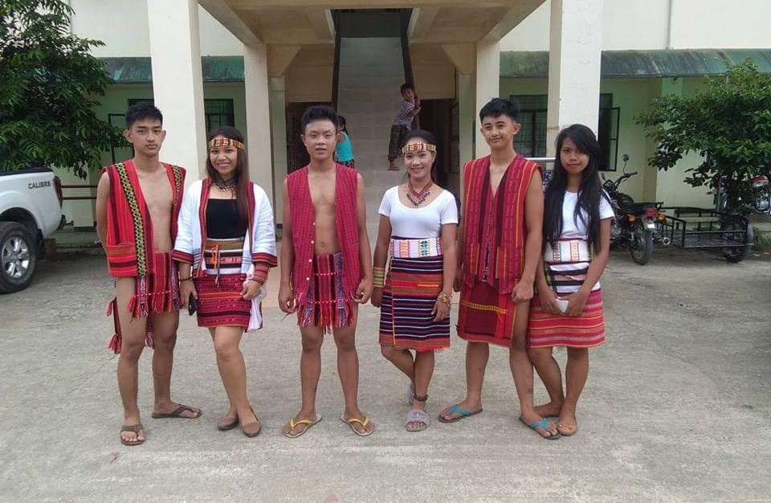
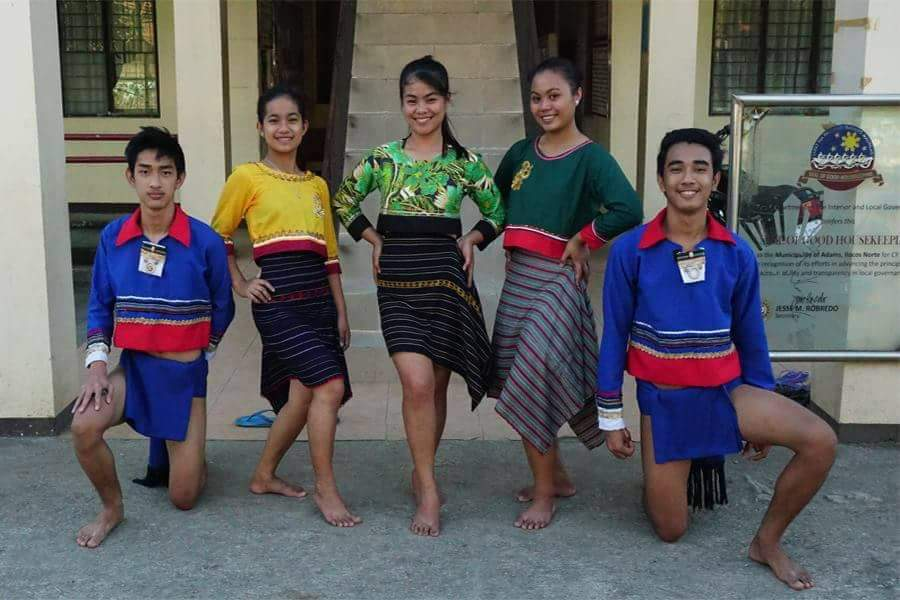

The Tribes of Adams


Kankanaey Tribe
The Kankanaey people are an Indigenous peoples of the Northern Philippines. They are part of the collective group of indigenous people known as the Igorot people.

Yapayao Tribe
The Isnag people (also referred to as Isneg and Apayao) are an Austronesian ethnic group native to Apayao province in the Philippines' Cordillera Administrative Region. Their native language is Isneg (also called Isnag).